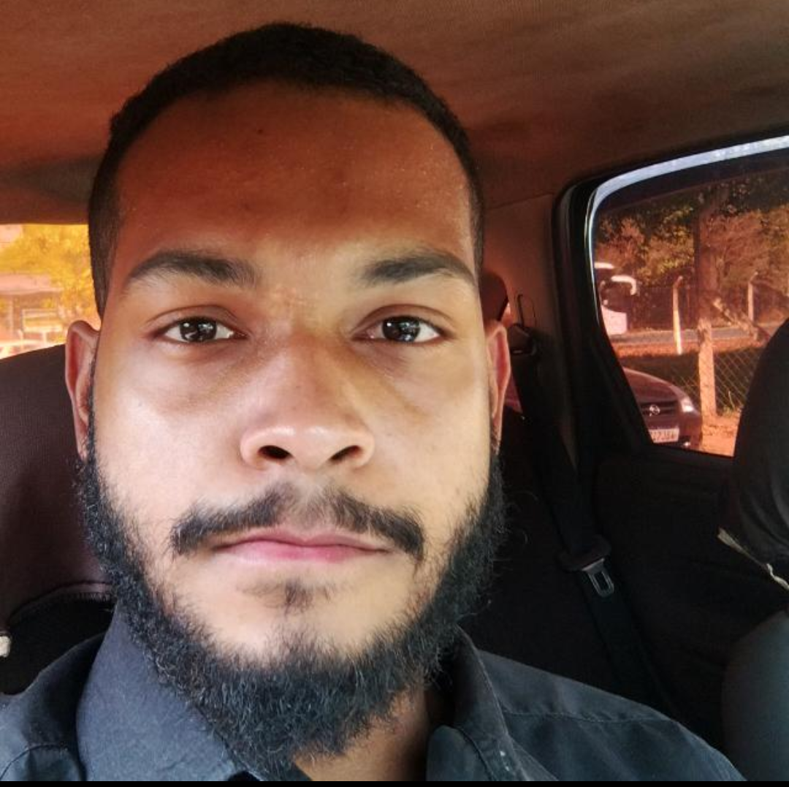
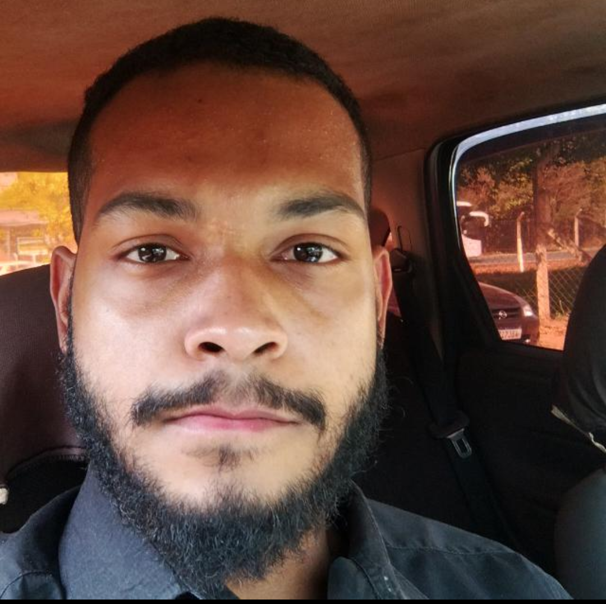

Nome
Meu nome é Ehllias Ramalho e tenho 22 anos de idade.
Curso
Estou fazendo a matéria de Sistemas para Internet na Faculdade de Tecnologia de Taquaritinga - Profa. Marlene Maria Miletta Servidoni.
Semestre
Recentemente venho fazendo o segundo semestre o qual tem matérias incríveis como Web design, criação de sites, Otimização de buscas, Matemática discreta, entre outras matérias formidáveis.
Ano
Estou no primeiro ano do curso de Sistemas para Internet e quanto mais tempo está passando mais eu estou percebendo que foi uma ótima escolha para mim poder cursar essa área.
Turno
Faço esse curso no período da manhã devido aos empregos da região que por ter muitas empresas industriais e do ramo computacional que produzem empregos em horários flexisiveis em relação a essa graduação teria como conciliar os mesmos.
Resumo Pessoal
Com base nisso acredito que trilhando esses caminhos acredito que irei ter um futuro próspero nessa área até pq se cair mil vezes me levantarei mil e uma vezes pois acredito na frase que diz:
"Nunca prometa algo que não possa cumprir, ou prometa sem a certeza que não possa terminar no prazo."-Carlos Filho
Além disso uma das poucas coisas que aprendi ,até porque tenho ainda tem muito a aprender no JiuJitsu é que enquanto o chão possa ser o fim de muitos para mim é somente o começo.
Resumo Acadêmico
Tenho tido grandes conquistas que me levam a encontrar o que tanto quero fora aprendizados que somente são entendidos com resiliência, muita força de vontade e dedicação. Sei que se tornará mais difícil mas nem por isso irei desanimar. Terei as melhores notas e consigurei o que quero.